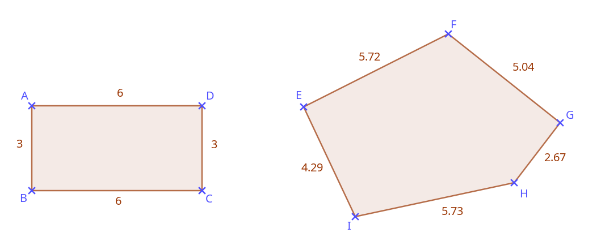
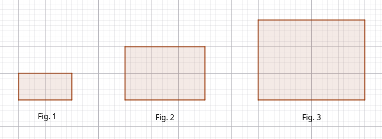

Formler fra dagligliv og yrke
1. Bruk av formler
En matematisk formel er et uttrykk som beskriver en sammenheng og gjør det mulig å utføre en beregning med ulike størrelser.
Vi har mange formler for å beregne ulike størrelser, for eksempel arealet av en sirkel \(A = {\pi} \cdot r²\) eller gjennomsnittsfarten til et kjøretøy \(v = \dfrac{s}{t}\).
For å bruke en formel erstatter vi bokstavene som beskriver størrelser, med verdiene vi har fått oppgitt.
En bil med masse \(1500\text{ kg}\) kjører i \(80\text{ km/h}\). Vi vil beregne bilens kinetiske energi med formelen \(E_k = \dfrac{1}{2}mv^2\).
\(m\) er massen i kilogram, og \(v\) er farten i meter per sekund. Resultatet er en energi målt i joule.
Først må vi derfor gjøre om farten: \(80\text{ km/h} \approx 22{,}2\text{ m/s}\). For å gjøre dette kan vi bruke kryssmultiplikasjon (se kapittel 1, eksempel 2.3).
Bilen har dermed en kinetisk energi på omtrent \(370\,000\text{ J}\).
Når vi bruker en formel, kan det hende at vi må løse en likning.
Vi vil lage et rektangulært beite for 10 kyr. Vi planlegger et areal på \(50\text{ dekar}\). Den ene siden av beitet er \(200\text{ m}\). Vi vil finne lengden på den andre siden.
Vi vet at \(1\text{ dekar} = 1000\text{ m}^2\), altså er \(50\text{ dekar} = 50\,000\text{ m}^2\).
Vi bruker formelen for arealet av et rektangel: \(A = g \cdot h\).
Her kjenner vi \(A = 50\,000\) og \(g = 200\), og vi skal finne \(h\).
Beitet må derfor måle \(200\text{ m}\) ganger \(250\text{ m}\).
Det er ikke nødvendig å lære alle variantene av den samme formelen utenat. Det viktigste er å kunne finne dem igjen.
Gjennomsnittsfarten er \(v = \dfrac{s}{t}\). Vi kan skrive formelen som to likeverdige brøker for å bruke kryssmultiplikasjon:
Da kan vi finne:
2. Å lage formler
Omkretsen til en figur er den totale lengden rundt figuren.
For å beregne omkretsen til en mangekant trenger vi bare å addere lengdene av alle sidene.
Vi trenger altså ikke å lære formler utenat: Vi kan finne dem fram selv!
Vi har rektangelet ABCD og den uregelmessige femkanten EFGHI nedenfor. Lengdene er oppgitt i centimeter.

Omkretsen til rektangelet er derfor \(O = 6+3+6+3=18\text{ cm}\).
Omkretsen til femkanten er \(O = 5{,}72+5{,}04+2{,}67+5{,}73+4{,}29=23{,}45\text{ cm}\).
For rektangelet trenger jeg ikke å lære en formel som \(O = 2 \cdot g+2 \cdot h\) utenat: Jeg kan finne formelen direkte ved å addere sidene.
Sirkelen er selvfølgelig et unntak. For å beregne omkretsen trenger vi formelen \(O = 2 \cdot \pi \cdot r\).
Et mønster eller en sammenheng som gjentar seg etter en bestemt regel, gjør det mulig å skrive en generell formel. Da kan vi beskrive sammenhengen for alle mulige verdier og gjøre beregninger enklere. Det er akkurat det samme prinsippet som i en formel som \(A = g \cdot h\): Vi trenger ikke å finne opp formelen på nytt for hvert nytt rektangel.
De tre rektanglene nedenfor danner et voksende mønster: Det første består av \(1 \cdot 2 = 2\) ruter, det andre av \(2 \cdot 3 = 6\) ruter, og det tredje av \(3 \cdot 4 = 12\) ruter.

Vi ser et mønster og kan derfor forutsi hvordan de neste rektanglene vil se ut: Det fjerde vil bestå av \(4 \cdot 5 = 20\) ruter, det åttende av \(8 \cdot 9 = 72\) ruter, og så videre.
Vi kan generalisere mønsteret og finne arealet til hvilket som helst rektangel i serien uten å tegne det: Arealet til det \(n\)-te rektangelet er \(n \cdot (n+1)\) ruter.
Vi har dermed skrevet en formel som gjør det mulig å beregne antall ruter i hvilket som helst rektangel i serien.
Et mobilselskap tilbyr et abonnement som koster \(180\text{ kr}\) per måned, pluss \(2\text{ kr}\) per minutt for samtaler til utlandet.
Hvis jeg ringer til utlandet i 30 minutter i løpet av måneden, betaler jeg:
$$ \begin{aligned} 180 + 2 \cdot 30 = 180 + 60 = 240\text{ kr} \end{aligned} $$
Hvis jeg ringer til utlandet i 120 minutter i løpet av måneden, betaler jeg:
$$ \begin{aligned} 180 + 2 \cdot 120 = 180 + 240 = 420\text{ kr} \end{aligned} $$
Vi kan nå finne en generell formel: Den totale prisen per måned, i kroner, er \(180 + 2x\), der \(x\) er antall minutter med samtaler til utlandet.
Vi kan skrive formelen slik: \(P = 180 + 2x\).